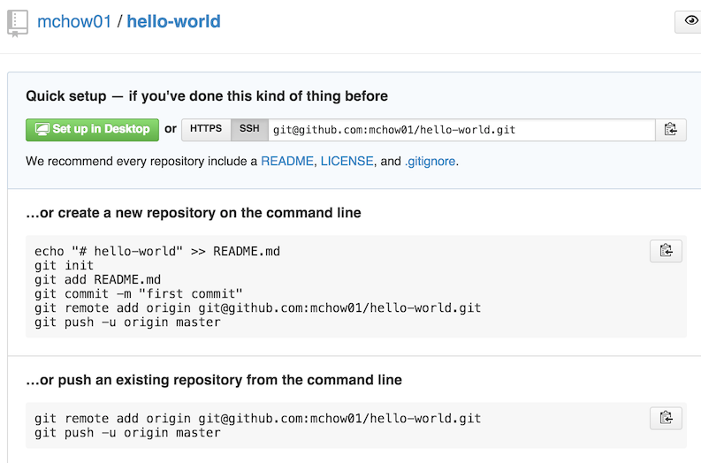

In this course, you will be using Git and GitHub extensively to keep track of your work, communicate what you have done, work with teammates remotely (e.g., semester group project), and submit almost all assignments and labs. All assignments and labs in this course should be done on your local computer. That is, there is no need to connect to homework.cs.tufts.edu to work on assignments and labs unlike most other classes in our curriculum.
Please note that Git and GitHub are not the same. Git is the distributed version control system (software). Git is responsible for keeping track of changes to content (usually source code files), and it provides mechanisms for sharing that content with others. GitHub is a company that provides Git repository hosting. See https://programmers.stackexchange.com/questions/173321/conceptual-difference-between-git-and-github for more insights.
Please read the following instructions first, carefully!
hello-world under your account! Important Note: To avoid future confusions and Git conflicts, DO NOT initialize the repository with a README.hello-world repository under your account in GitHub, you will see a page that looks something like the following (with the exception of the mchow01 which is my GitHub username). hello-world via mkdir hello-world. This directory can be located anywhere on your computer. Then go into the directory via cd hello-world (cAsE sEnSiTiVe).hello-world directory, follow the instructions as noted on the GitHub page (or screenshot above):
echo "# hello-world" >> README.md git init git add README.md git commit -m "first commit" git remote add origin git@github.com:your_github_username_here/hello-world.git git push -u origin master
echo "# hello-world" >> README.md creates a file named README.md with one line: # hello-world.
hello-world repo, commit and push change to GitHub. Please also write short, one line, coherent commit messages (i.e., no "dr. steve brule" or "asdf" garbage). Important Note 3: Please do not use photos of other students, me, or the TAs. That is just downright creepy.This lab is worth 2 points.
hello-world repo. No credit for this lab if I cannot find your hello-world repo.hello-world repo